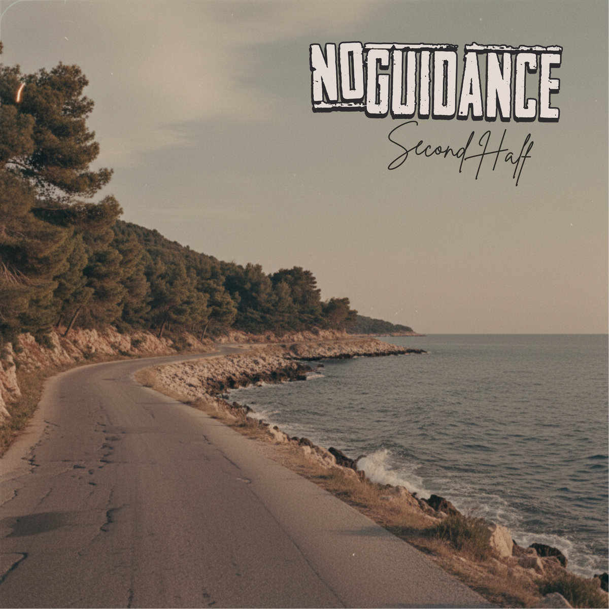

Review
NO GUIDANCE - Second Half

Am 1. August standen No Guidance noch beim Lokvogel Skatepunk Festival vor meiner Kamera.
Ein paar Tage später liegt "Second Half" auf Bandcamp.
Play gedrückt. Kurz wieder zwanzig. Nicht im Spiegel. Nicht im Rücken. Ganz sicher nicht in den Knien. Aber im Kopf.
Da ist sofort dieses alte Skatepunk-Gefühl: helle Gitarren, ordentlich Bewegung, Melodie in der Stimme und ein Refrain, der eher nach verschwitztem Club als nach Hochglanz-Playlist klingt.
No Guidance gehören für mich zu diesen Bands, die 90er-Skatepunk und Melodic Hardcore nicht ausstellen wie ein altes Tourshirt hinter Glas.
Die tragen das Zeug noch.
Manchmal vermutlich sogar ungewaschen.
Interessant an "Second Half" ist, dass der Song nicht nur auf Tempo und Nostalgie setzt. Im offiziellen Text geht es um Freundschaft, fast dreißig gemeinsame Jahre, Umwege, schlechte Phasen, gute Phasen und darum, mit denselben Menschen weiterzugehen.
Die Zeile über die "second half of our lives" reicht völlig, um zu verstehen, wo der Song hinwill.
Da schaut jemand nicht beleidigt zurück, sondern dankbar zur Seite.
Das kann im Punk schnell peinlich werden.
Wird es hier nicht.
No Guidance werden persönlich, ohne dabei in Kitsch abzurutschen. "Second Half" bleibt wach, zügig und lässt genug Platz zum Mitsingen.
Im Interview beim Lokvogel ging es um Punkrock, Szene, kleine Bühnen und darum, warum man diesen ganzen Kram nach all den Jahren immer noch macht.
Genau daran musste ich beim Hören denken.
Nicht an große Karrierepläne.
Eher an Leute, die diesen Sound immer noch brauchen, weil er ihnen etwas sortiert, was der Alltag durcheinanderwirft.
Nach dem ersten Durchlauf habe ich kurz überlegt, ob mein altes Skateboard noch irgendwo liegt.
Dann hat mein Knie etwas dazu gesagt.
Der zweite Durchlauf läuft trotzdem.
No Guidance - Second Half auf Bandcamp
Spotify: No Guidance - Second Half
No Guidance im RandaleFUNK-Interview
No Guidance auf Bandcamp
No Guidance auf Instagram